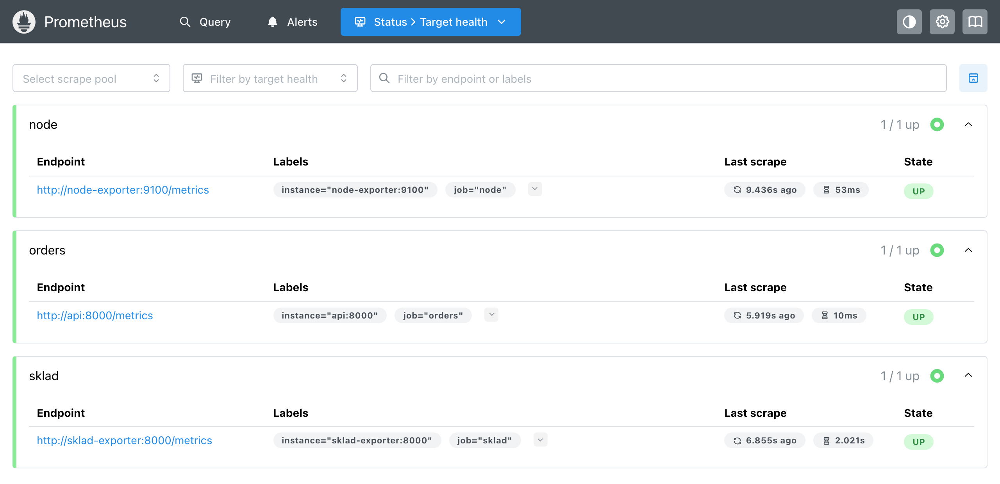
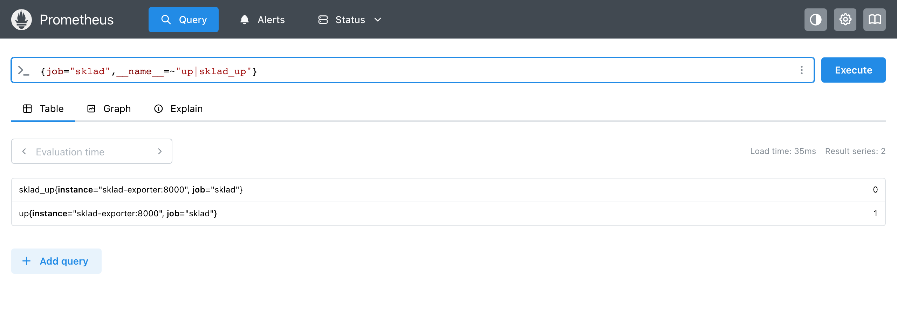

Модуль 4 · сбор и хранение · сбор и хранение
Глава 4.1
Exporter: метрики
чужой программы
Не в каждую программу можно дописать метрики. В главе разобрано, как exporter переводит состояние такой программы в метрики, что в этом случае означает up и какую машину на самом деле измеряет node_exporter.
- Категория
- Сбор данных
- Уровень
- Средний
- Опирается на
- Глава 2.3: /metrics; глава 2.4: up; главы 3.4–3.5: counter и gauge
- Результат
- Exporter для программы без метрик; чтение up и метрики доступности
§1Программа без метрик
Переводит то, что собеседник сказал сейчас. Своего мнения и записей у него нет.
На каждый опрос спрашивает программу и пересказывает её ответ языком метрик.
В проекте модуля есть склад: он собирает заказы, по одному за 2 секунды. Метрик у склада нет — своё состояние он отдаёт в JSON на странице /status. Склад считается чужой программой: дописать в него код нельзя.
Exporterотдельная программа-переводчик
Программа, которая при каждом опросе читает состояние другой программы и отдаёт его на своей странице /metrics. Prometheus опрашивает именно exporter; к самой программе он не обращается.
Скрипт читает оба адреса подряд: сначала JSON склада, затем страницу его exporter.
import json import urllib.request def get(url): with urllib.request.urlopen(url) as response: return response.read().decode() print(json.loads(get("http://localhost:8043/status"))) # склад for line in get("http://localhost:8042/metrics").splitlines(): # exporter if line.startswith("sklad_"): print(line)
{'queue': 3, 'packed_total': 0}
sklad_up 1.0
sklad_queue_length 3.0
sklad_packed_total 0.0
Числа те же, изменилась форма. Поле queue стало gauge sklad_queue_length, поле packed_total — счётчиком sklad_packed_total. Строку sklad_up exporter добавил от себя, она разобрана в §3.
§2Exporter на Python
В prometheus-client exporter пишут как сборщик: класс с методом collect. Библиотека вызывает этот метод при каждом запросе /metrics. Сборщик склада целиком:
SKLAD_URL = os.environ.get("SKLAD_URL", "http://sklad:8000/status") class SkladCollector: def collect(self): up = GaugeMetricFamily("sklad_up", "1 if the warehouse answered /status") try: with urllib.request.urlopen(SKLAD_URL, timeout=2) as response: status = json.load(response) except OSError: up.add_metric([], 0) yield up return up.add_metric([], 1) yield up yield GaugeMetricFamily("sklad_queue_length", "Orders waiting to be packed", value=status["queue"]) yield CounterMetricFamily("sklad_packed", "Orders packed since start", value=status["packed_total"]) REGISTRY.register(SkladCollector())
collect читает /status и сразу возвращает метрики. Очередь — GaugeMetricFamily, собранные заказы — CounterMetricFamily; окончание _total библиотека допишет сама. Если склад не ответил, сборщик отдаёт только sklad_up 0.
Хранилища у exporter нет. Так требует документация Prometheus: читать программу в момент опроса, без своего таймера, — тогда число в базе не старше самого опроса. Опыт: в склад отправлено шесть заказов, страница exporter прочитана дважды с промежутком 5 секунд.
# 14:52:58 sklad_queue_length 5.0 sklad_packed_total 0.0 # 14:53:03 sklad_queue_length 3.0 sklad_packed_total 2.0
За 5 секунд склад собрал два заказа. Exporter ничего у себя не обновлял — он снова спросил склад.
§3up и состояние программы
Prometheus опрашивает exporter, поэтому up сообщает только одно: ответил ли exporter. Опыт: склад остановлен, прошло два опроса. На странице Target health все три target в состоянии UP:

Остановку видно только по метрике, которую добавил сам exporter. Запрос обоих рядов задания:

Ряд sklad_queue_length в это время пропал из запросов: exporter перестал его отдавать. Метрику вида *_up документация советует как раз для такого случая — когда exporter жив, а программа за ним нет.
На первом кадре есть ещё одна деталь: опрос задания sklad длился 2,021 с вместо обычных 7 мс. Exporter ждал склад свои 2 секунды (timeout=2) и только потом ответил. Поэтому таймаут exporter делают меньше scrape_timeout задания, здесь 10 с. Иначе Prometheus оборвёт опрос раньше, и вместо sklad_up 0 получится up 0 без объяснения причины.
§4Готовый exporter: node_exporter
Для распространённых программ exporter уже написаны: node_exporter для машины Linux, postgres_exporter, redis_exporter и десятки других. node_exporter читает файлы ядра в /proc и /sys. Скрипт считает, сколько он отдаёт и какие разделы остались пустыми:
import urllib.request with urllib.request.urlopen("http://localhost:9110/metrics") as response: lines = response.read().decode().splitlines() values = [line for line in lines if not line.startswith("#")] names = [line.split()[2] for line in lines if line.startswith("# TYPE")] failed = [line.split('"')[1] for line in values if line.startswith("node_scrape_collector_success") and line.endswith(" 0")] print("значений:", len(values), "метрик:", len(names)) print("сборщики без данных:", ", ".join(failed))
значений: 1392 метрик: 307 сборщики без данных: dmi, fibrechannel, hwmon, infiniband, mdadm, nvme, os, rapl, schedstat, tapestats, watchdog, zfs
1 392 значения против 18 у сервиса заказов, а ответ готовится несколько десятков миллисекунд. За каждый раздел отвечает свой сборщик (collector), и о каждом есть ряд node_scrape_collector_success. Двенадцать сборщиков вернули 0: они ищут оборудование — датчики, диски NVMe, RAID, — которого внутри контейнера нет.
§5Какую машину он измеряет
Висит на доме, но показывает температуру на улице.
Показывает ту машину, чьи файлы ему видны. Это не всегда компьютер, на котором запущен проект.
В Docker Desktop контейнеры работают внутри виртуальной машины Linux. Вот что node_exporter сообщил о «своей» машине и что на самом деле:
| Метрика | Значение | Что это на самом деле |
|---|---|---|
node_uname_info, nodename | 29df10f2da84 | Идентификатор контейнера |
node_uname_info, release | 7.0.12-linuxkit | Ядро виртуальной машины Docker |
node_memory_MemTotal_bytes | 4,1 ГБ | Память виртуальной машины; у компьютера 16 ГБ |
Ошибки здесь нет: exporter измерил то, что ему доступно. На сервере Linux его запускают прямо на машине или в контейнере с доступом к её файлам. Для Docker README node_exporter приводит флаги --net=host и --pid=host, корень машины в /host и --path.rootfs=/host. Прежде чем верить числам exporter, проверяют, откуда он их читает.
§6Проверьте себя
Вопрос 1Склад остановлен, его exporter работает. Что покажет up{job="sklad"}?
upотносится к target, а target — exporter. Он ответил.Верно. Остановку склада показывает
sklad_up 0.upпишется после каждого опроса. Пропал ряд очереди, которую exporter перестал отдавать.
Вопрос 2Exporter опрашивает программу раз в минуту по своему таймеру и отдаёт сохранённые числа. Чем это плохо?
Верно. Отметка времени — момент опроса, а число прочитано раньше.
Ответ формально правильный. Плохо то, что числа устаревшие.
Документация Prometheus требует читать программу в момент опроса.
Вопрос 3На ноутбуке с 16 ГБ памяти node_exporter в Docker Desktop показал node_memory_MemTotal_bytes около 4 ГБ. Почему?
Это
MemTotal— вся память машины, которую он видит.Верно. Имя машины в
node_uname_info— ID контейнера, ядро — linuxkit.Числа верные для той машины, файлы которой ему видны.
Вопрос 4Таймаут exporter — 15 с, scrape_timeout задания — 10 с. Программа за exporter зависла. Что будет в Prometheus?
Prometheus не ждёт 15 секунд: опрос обрывается на 10-й.
Верно. Опрос оборван по таймауту, ответа exporter нет. Таймаут exporter делают меньше
scrape_timeout.Своих сохранённых чисел у exporter нет.
- Prometheus. Writing exporters: scheduling, failed scrapes — prometheus.io/docs/instrumenting/writing_exporters
- Prometheus. Exporters and integrations — prometheus.io/docs/instrumenting/exporters
- node_exporter: README, Docker — github.com/prometheus/node_exporter
- prometheus-client для Python: custom collectors — prometheus.github.io/client_python/collector/custom
- Опыты главы: склад, его exporter и node_exporter 1.9.1, 04.11.2026